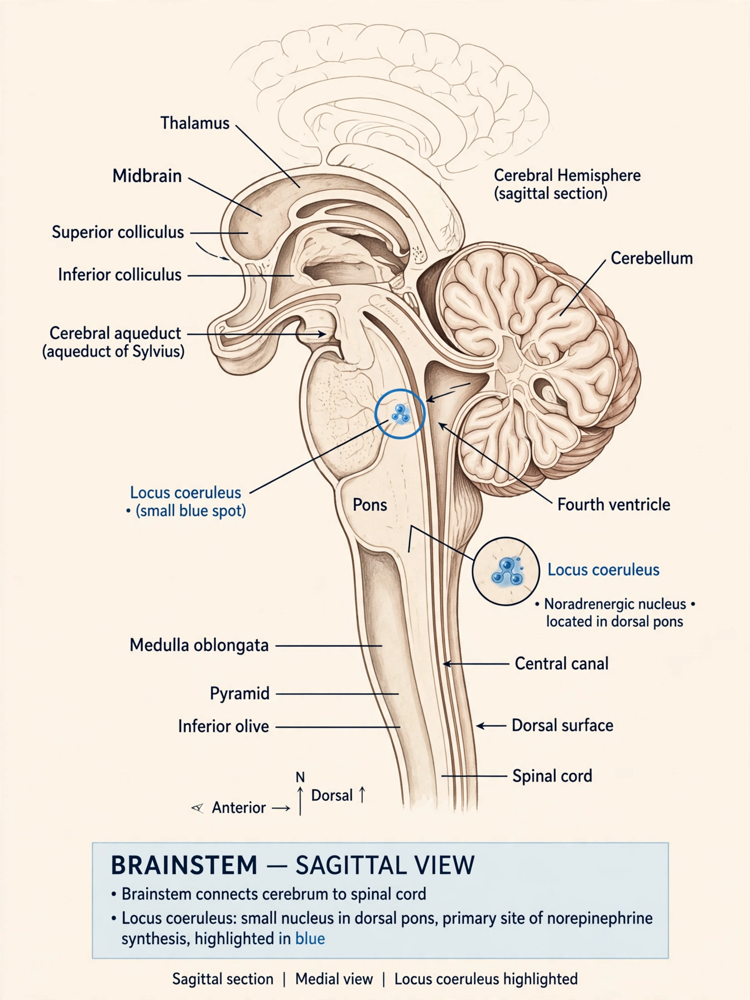

From Wikipedia, the free encyclopedia
| Locus coeruleus | |
|---|---|
 Location of the locus coeruleus in the dorsal pons | |
| Part of | Pons, brainstem |
| Neurotransmitter | Norepinephrine (noradrenaline) |
| Function | Arousal, wakefulness, attention, stress response |
The locus coeruleus (Latin for "blue spot") is a nucleus in the pons of the brainstem involved with physiological responses to stress and panic. It is the principal site for synthesis of the neurotransmitter norepinephrine (noradrenaline) in the brain, and sends projections throughout the central nervous system — to the cerebral cortex, hippocampus, amygdala, thalamus, cerebellum and spinal cord. The nucleus appears blue in fresh tissue because of granules of the pigment neuromelanin inside its neurons. In humans it contains roughly 50,000 pigmented neurons in total, an astonishingly small number given its brain-wide influence.
The locus coeruleus–norepinephrine system regulates arousal and the sleep–wake cycle: its neurons fire most during wakefulness, decrease firing during non-REM sleep, and are almost silent during REM sleep. It modulates attention and vigilance, shifting the brain between focused exploitation of a task and exploratory scanning of the environment. It is activated by salient and stressful stimuli, contributes to the encoding of emotional memories, and helps drive the sympathetic "fight or flight" response.
Dysfunction of the locus coeruleus is implicated in anxiety disorders, post-traumatic stress disorder, depression and insomnia. The nucleus is one of the earliest sites of pathology in both Alzheimer's disease and Parkinson's disease, where its pigmented neurons are progressively lost; tau pathology may appear there decades before symptoms. Drugs that act on noradrenergic signalling — including some antidepressants, the ADHD medication atomoxetine, and alpha-2 agonists such as clonidine — exert part of their effects through this system.
See also: Norepinephrine · Pons · Reticular formation · Optic nerve